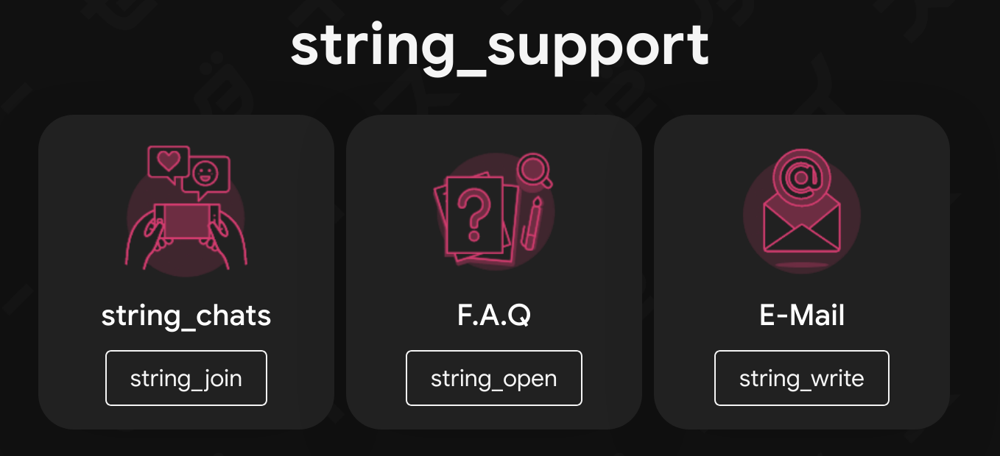

Instander - 沒有廣告的 IG
給非台灣或是未來的讀者：Instagram（IG）是台灣人在 2024 前後常用的社群軟體，可以發佈貼文、「限時動態」（24 小時後會消失的圖片、影片）、「Reels」（直式短片），也可以做為即時通使用。
如果您曾經想過「如果 IG 沒有廣告該有多好」，Instander 非常適合您。它可以去除限時動態、貼文、Reels 之間的廣告，同時附帶介面更改、隱身、下載媒體、提高畫質等功能。
軟體簡介
- 適用系統：Android 9+
- 最新版本：17.2（Telegram 群組中有 18.0 BETA）
- 官方網站：thedise.me/instander/
- 源碼連結：非開源軟體，請斟酌使用
資訊更新於 2024-04-15
Instander 預設啟用：
- 去除廣告功能：除了「更舊貼文」中的廣告，一切廣告無影無蹤。
- 媒體下載功能：可以下載限時動態、貼文、Reels。
設定中還有更多選項，如：
- 隱身模式：「偷看」限時動態、直播、私訊而不顯示已讀。
- 提高畫質：提高媒體上傳及下載的畫質，讓貼文、限時更清晰。
- 介面更改：顯示互追狀態、複製內文按鈕、關閉自動播放。
- 開發者模式：魔改整個 IG，一些例子：
- 讓 Reels 按鈕消失，改回舊介面
- 顯示 Reels 及影片的時間條，供快轉倒退
- 縮小首頁大頭貼
- 開啟 / 關閉便利貼功能
下載及更新途徑
Instander 可以透過兩種管道下載，一個是官方網站，另一個是 Telegram 群組。只要前往官方網站、點選最下方的「string_repo」（對，它的網站好像壞掉了），再點選「Instander 17.2」或是更新的檔案名稱就會開始下載。
在點進 Repo 頁面時，您會看到兩個版本選項：Original 與 Clone。如果打算刪除原本的 Instagram 程式，可以直接在 Original 分頁下載；反之，如果想保留原本的 IG，可以先點擊 Clone 再點擊檔案名稱，下載複製版。
更新的話只能透過 Telegram 更新頻道得知，可以在下載 Telegram 並登入後按下底下的「Telegram」按鈕跳轉加入頻道。
取得說明
Instander 的官方說明平台也是 Telegram。（可能跟作者是烏克蘭人有關？）在「string_support」下方有三個按鈕，前兩個是加入 Telegram 的相對應群組，第三個可以寫信給開發者。

FAQ 中包含一部分的開發者設定指南，但連結要找一下；Chat 不建議加入，很吵。寫信我沒寫過，有問題可能可以試試看。
本文也在個人 Instagram 發佈，SVG 在這裡。
{kind=link}
最後更新於 2024-04-15